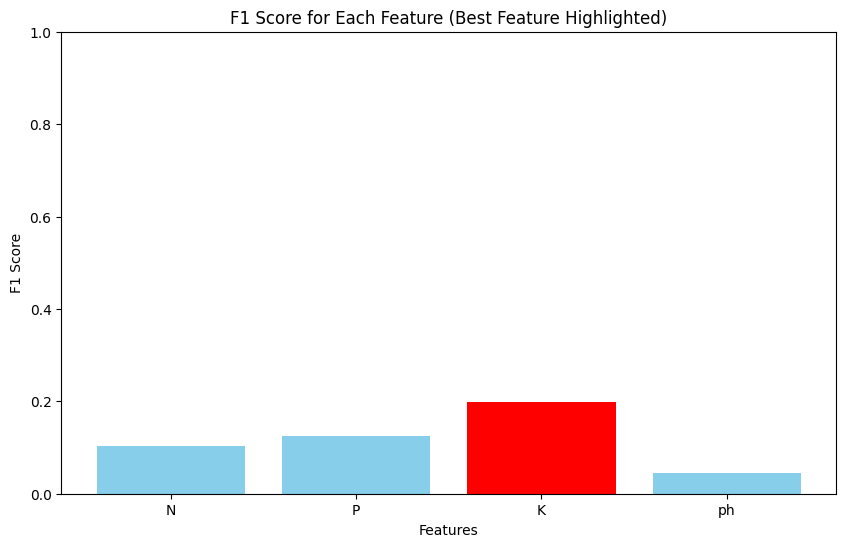
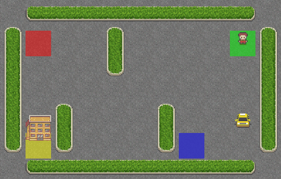
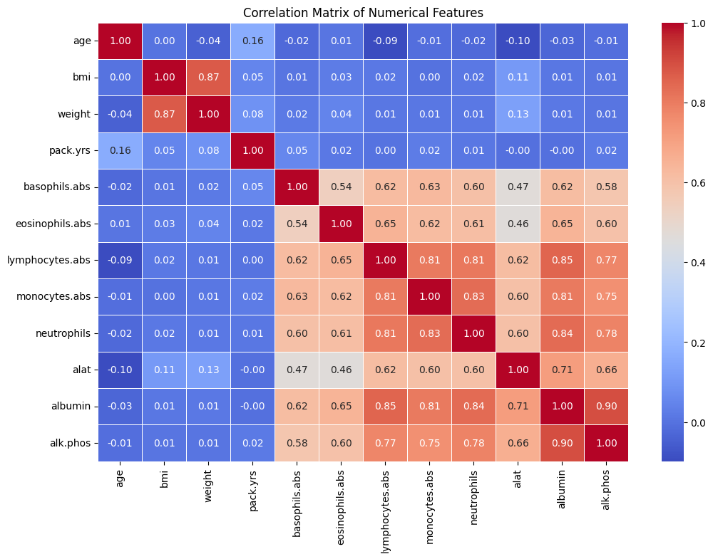
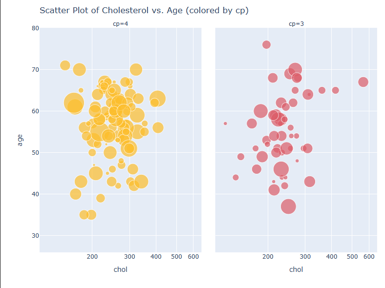
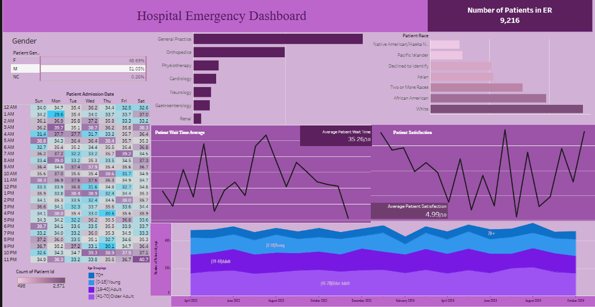
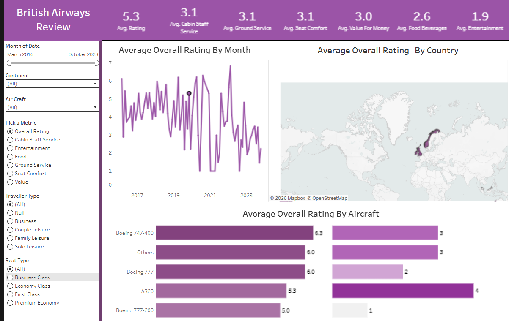

My Projects
A selection of my projects

1. Soil Analysis for Crop Selection
Built and trained a Logistic Regression model to predict crop types based on essential soil metrics (N, P, K, pH) and evaluated feature importance.

2. Taxi-v3 Environment (RL)
Trained a reinforcement learning agent using Q-learning and an epsilon-greedy strategy to efficiently navigate a grid-based environment.

3. Drug Safety EDA
Performed exploratory data analysis and statistical testing on a clinical drug safety dataset to evaluate adverse effects and patient metrics.

4. Heart Disease Data Viz
Conducted comprehensive EDA on a clinical heart disease dataset using advanced, interactive Plotly visualizations to communicate insights.

5. Hospital Emergency Dashboard
Designed an interactive Tableau dashboard tracking hospital KPIs, patient demographics, wait times, and department volumes.

6. British Airways Review Dashboard
Analyzed passenger reviews and satisfaction metrics across multiple service categories utilizing interactive geographic and trend layouts.
Data Presentation Demo
Short clip demonstrating dashboard interactivity: